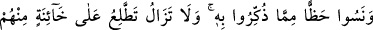

EHL-İ KİTÂBIN
AHİDLERİNİ BOZMALARI
12- Andolsun ki Allah, İsrâiloğullarından söz almıştı. (Kefil olarak) içlerinden on
iki de başkan göndermiştik. Allah onlara şöyle demişti: Ben sizinle beraberim. Eğer
namazı dosdoğru kılar, zekâtı verir, peygamberlerime inanır, onları destekler ve
Allah’a güzel borç verirseniz (ihtiyacı olanlara Allah rızası için faizsiz borç
verirseniz) andolsun ki sizin günahlarınızı örterim ve sizi zemîninden ırmaklar akan
cennetlere sokarım. Bundan sonra sizden kim inkâr yolunu tutarsa doğru yoldan
sapmış olur.
13- Sözlerini bozmaları sebebiyle onları lânetledik ve kalplerini katılaştırdık.
Onlar kelimelerin yerlerini değiştirirler (kitaplarını tahrif ederler). Kendilerine
öğretilen şeyin (Tevrât’ın) önemli bir bölümünü de unuttular. İçlerinden pek azı
hâriç, dâima onlardan hâinlik görürsün. Yine de sen onları affet ve aldırma.
Şüphesiz Allah iyilik edenleri sever.
14- «Biz hristiyanlarız» diyenlerden de kesin sözlerini almıştık, ama onlar da
uyarıldıkları şeyden (verilen öğütlerin veya Kitâb’ın) önemli bir bölümünü
unuttular. Bu sebeple kıyâmet gününe kadar aralarına düşmanlık ve kin saldık.
Yakında Allah onlara yaptıklarını haber verecektir.